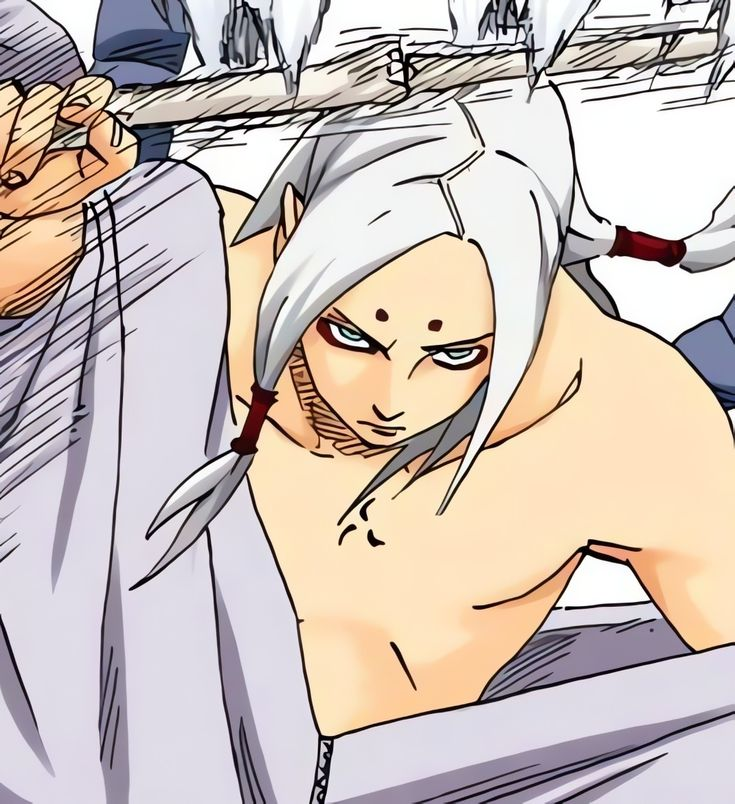
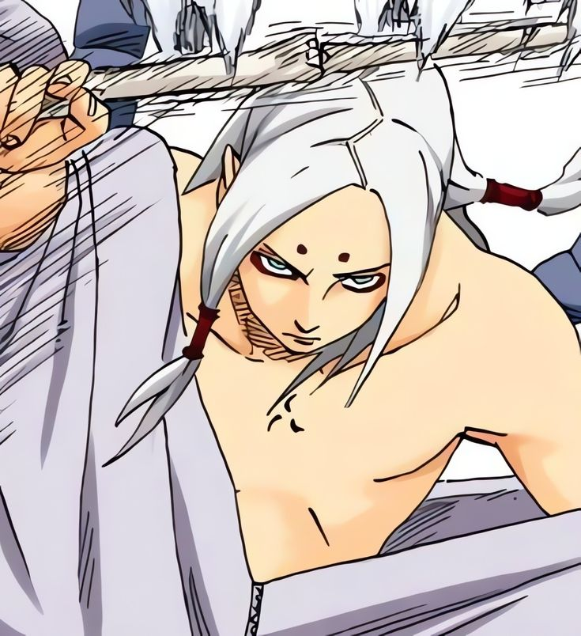
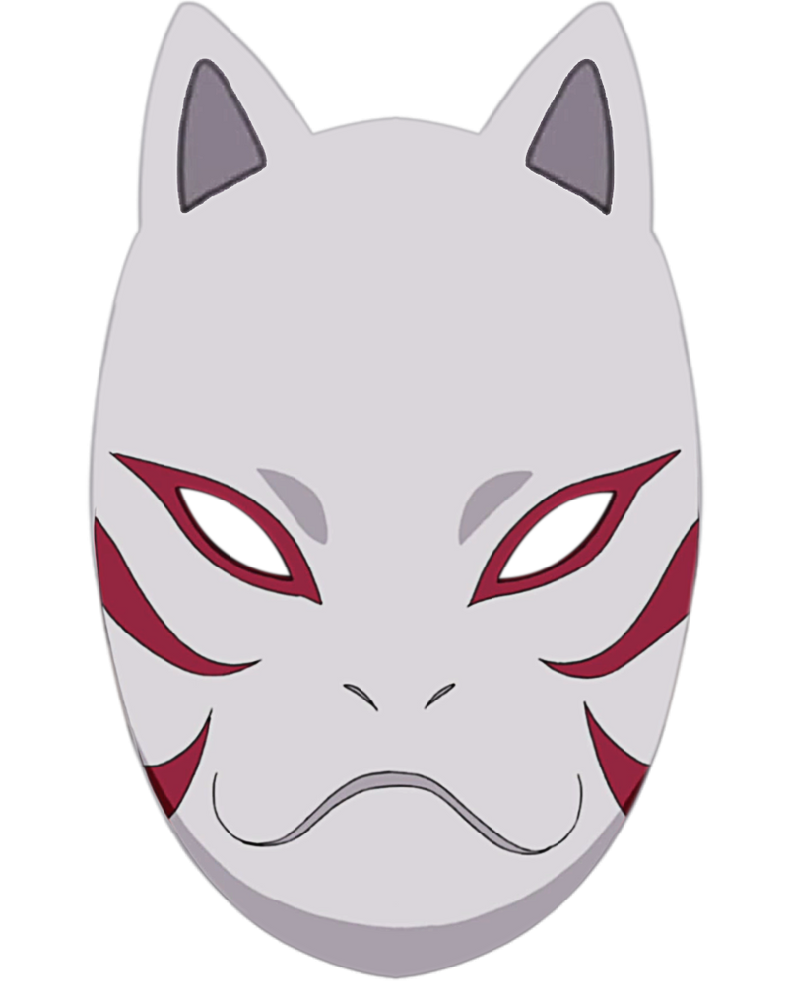
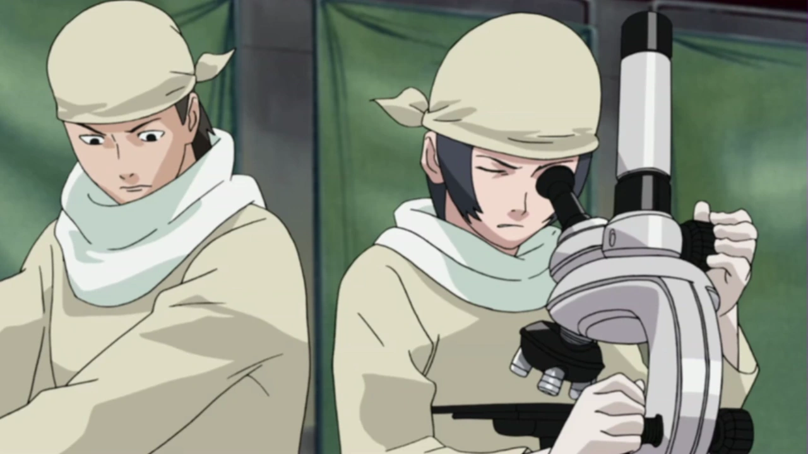
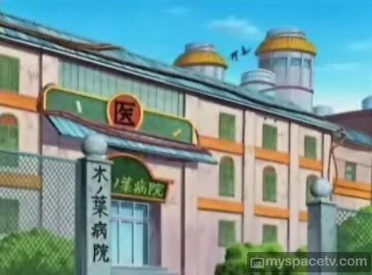

Kiyotaka Kaguya
Le scientifique fou
 

Qui est Kiyotaka Kaguya
Kiyotaka est né dans un environnement où le monde des shinobis n'était pas inconnu. Depuis son plus jeune âge, il était plongé dans l'univers du ninjutsu et de la médecine grâce à la formation dispensée par son père, un shinobi respecté de Kiri. Malgré son jeune âge, Kiyotaka était un prodige, maîtrisant les bases du ninjutsu avec une rapidité surprenante. Sa passion pour la médecine, en particulier pour la guérison des blessures, le distinguait des autres enfants de son âge. Il passait une grande partie de son temps à étudier les différentes techniques médicales et à comprendre comment le corps humain réagissait aux blessures, cherchant toujours à aller plus loin dans ses recherches.
"L'art n'est pas beau par son apparence, le véritable art est beau de sens, ainsi reconnaît-on un artiste."
-Kiyotaka Kahuya

Kiyotaka avait un frère cadet avec qui il partageait une relation très forte. Bien qu'ils aient des caractères différents, Kiyotaka étant plus réfléchi et posé, tandis que son frère était plus impulsif et aventurier, ils se soutenaient mutuellement. Leurs journées étaient remplies d'entraînements intensifs et d'études. Kiyotaka, bien que parfois réservé, avait un désir constant d'apprendre et de s'améliorer, cherchant à dépasser ses limites et à devenir un ninja compétent, mais aussi un médecin capable de soigner les blessures les plus graves. Il aspirait à faire une différence dans le village de Kiri, que ce soit sur le terrain de la guerre ou dans les hôpitaux. Un jour, alors qu'il accompagnait son frère et quelques amis en mission, Kiyotaka eut l'occasion de voyager en dehors de Kiri, dans le Pays de la Pluie. Lors de leur voyage, ils arrivèrent près d'un petit hameau et aperçurent un enfant et un homme à une distance de 60 mètres. Curieux, Kiyotaka et son frère décidèrent de s'approcher, mais ils furent rapidement interrompus par trois ninjas qui se déplacèrent rapidement, ne les repérant heureusement pas. Ils restèrent à l'écart, observant silencieusement les ninjas. Ces derniers attaquèrent l'homme et l'enfant, déclenchant un conflit. Kiyotaka, voyant que l'un des ninjas agissait de manière étrange, voulut intervenir pour aider l'homme, mais son frère, plus pragmatique, l'arrêta, le conseillant de ne pas se précipiter. Finalement, Kiyotaka se contenta de regarder, ne sachant pas s'il aurait pu faire une différence. Malheureusement, la scène tourna mal. L'homme s'effondra, et les ninjas commencèrent à piller le village, tuant ceux qui résistaient. Kiyotaka et son frère décidèrent de rester discrets, mais l'horreur de la situation le marqua profondément. Ils campèrent à proximité, et le soir, Kiyotaka se sentit impuissant face à cette tragédie, son frère tentant de le réconforter malgré la douleur partagée.

"Ce qu'on risque révèle ce qu'on vaut."
- Kiyotaka Kaguya


De retour à Kiri, Kiyotaka se replongea dans l'entraînement avec une détermination renouvelée. À huit ans, il avait déjà développé une maîtrise impressionnante du ninjutsu, particulièrement de l'élément Suiton (l'eau), une affinité qu'il avait naturellement. Son père, bien que fier de ses progrès, savait qu'il fallait plus que de simples compétences pour forger un véritable ninja. Ainsi, il les poussa, lui et son frère, à s'entraîner encore plus dur.
Après deux ans d'efforts intenses, l'examen décisif arriva, celui qui déterminerait si Kiyotaka et son frère étaient prêts à quitter l'académie. La veille de l'examen, Kiyotaka était stressé, mais il mit de côté son ego et demanda conseil à ses amis pour se préparer. Ensemble, ils passèrent la nuit à réviser et à se soutenir, se promettant de réussir cet examen coûte que coûte. Le jour de l’épreuve, bien que fatigué, Kiyotaka réussit avec brio, mais il apprit une tragique nouvelle : son frère avait perdu la vie lors de l'examen, tué par un shinobi de Kiri dans une épreuve violente. Kiyotaka, bien qu'ayant réussi l'examen, ne se sentait pas victorieux. Le poids de la perte de son frère le brisa. Le monde qu’il avait vu avec tant d’espoir et d’ambition lui parut soudainement cruel et injuste.
Cette tragédie plongea Kiyotaka dans une grande détresse. Il chercha à venger son frère et à comprendre pourquoi un tel malheur avait pu arriver. Se sentant accablé par la douleur et la colère, il s'éloigna de Kiri, se retirant dans un coin plus isolé du village. Là, il se concentra sur ses recherches médicales, déterminé à devenir un médecin capable de soigner toutes les blessures, mais aussi un ninja capable de protéger son village de toute menace. Son ambition ne se limita pas à la simple guérison, il rêvait de redéfinir la médecine ninja, d’aller au-delà des limites actuelles en concevant des traitements plus efficaces et des techniques inédites.
Avec le temps, Kiyotaka décida de se tourner vers des méthodes plus expérimentales. Il développa un laboratoire secret où il étudiait des techniques avancées de guérison, tout en poursuivant des recherches sur le fuinjutsu pour renforcer les défenses de Kiri. Son objectif était de transformer Kiri en une véritable puissance militaire, capable de rivaliser avec les plus grands villages ninjas du monde. Il rêvait d’un village où la médecine et les technologies ninja fusionneraient pour créer une force redoutable, tout en préservant la sécurité et la prospérité du peuple de Kiri.
Kiyotaka se consacra entièrement à son objectif, mais la perte de son frère resta une blessure profonde, le guidant dans ses recherches et ses ambitions. De cette douleur naquit une détermination sans faille, et bien que Kiyotaka n’ait jamais oublié son passé, il se promit de changer le monde shinobi pour le rendre meilleur, en honneur de la mémoire de son frère et dans l’espoir d’un avenir plus sûr pour Kiri.

"La parole entraîne, l'exemple enseigne."
- Kiyotaka Kaguya
"La famille Kaguya"
Le Clan Kaguya (かぐや一族, Kaguya Ichizoku) est un clan de Kiri. Ce clan possédait un kekkei genkai permettant de contrôler la croissance des os du corps. Cela permettait de pouvoir utiliser leurs os pour se battre et même changer des os en armes tel qu'un bras en sabre ou la colonne vertébrale en fouet. De plus, leurs squelettes était bien plus résistant qu'un être humain normal en raison du fait qu'ils pouvaient contrôler le taux de calcium dans leur os. Ils étaient donc taillés pour le combat.
"Mes os sont une malédiction, ceux qui croiseront mon regard seront maudits"
-Kiyotaka Kaguya
Objectifs (Court terme) :
Au cours de sa vie de ninja, Kiyotaka souhaite rendre fier son père en devenant un pilier de soutien pour Kiri. Pour ça, il veut intégrer les scientifiques de Kiri pour rester fidèle aux traditions du clan. Kiyotaka veut aussi se faire des nouveaux amis en parlant à tout le monde, cherchant à tisser des liens et à élargir ses connaissances. Il veut aussi montrer que les Kaguya sont des gens bien et normaux, dans l'idée de redorer l'image de son clan.
Après, il envisage de rejoindre le service de renseignement de Kiri, avec l'ambition de le diriger un jour et de travailler avec les hauts-gradés du village pour protéger les habitants de toute menace. En partageant son savoir et travaillant en arrière-plan pour la sécurité de Kiri, il montre son envie de défendre son village et de contribuer à sa prospérité, et il est prêt à mettre sa vie en jeu pour ça. Kiyotaka souhaitait aider les personnes souffrantes de Kiri, il souhaitera bientôt rejoindre la section médicale afin de venir en aide au maximum de personnes possible. Cependant, il se rendra compte malgré lui que les méthodes utilisées sont trop classiques et ne peuvent malheureusement pas soigner correctement. Pour pallier à cela, il souhaiterait construire son propre cabinet médical afin d’aider à soigner les personnes qui ne peuvent être soignées avec l’aide des techniques classiques.

Objectifs (Moyen terme) :
Kiyotaka veut explorer les archives du village pour faire revenir d’anciennes traditions du clan Kaguya et restaurer son patrimoine culturel. Cela permettrait d’effectuer d’anciens rituels, de réutiliser de vieilles techniques oubliées et de reconstruire une bibliothèque Kaguya pour préserver cette mémoire historique. Cet objectif pourrait l’amener à parcourir le monde pour retrouver des parchemins et des artefacts qu’on pensait perdus pour toujours. Cela lui permettrait d’en apprendre plus sur le passé de son clan, de savoir pourquoi il fut écarté du village de Kiri et de comprendre réellement comment les choses se sont passées. Kiyotaka aspire à devenir un maître du fuinjutsu pour protéger Kiri. Il voit dans cet art du scellement un moyen de renforcer les défenses du village, en contrôlant le chakra des ennemis et en posant des barrières de protection avancées. Son objectif va au-delà de la simple maîtrise personnelle : il souhaite transmettre ces connaissances et former une nouvelle génération de spécialistes. En prenant des élèves sous son aile, Kiyotaka veut partager les subtilités du fuinjutsu, en leur inculquant la rigueur et la précision nécessaires. Ces jeunes ninjas deviendront les gardiens, En créant son cabinet de médecine, Kiyotaka commencera d'abord à développer son jutsu et des techniques de médecine et ensuite à apprendre à faire des prothèses. Il souhaitera acquérir la perfection, il deviendra dans le but de devenir un ninja médecin reconnu partout dans le monde shinobi pour ses exploits dans la médecine. Avoir des compétences infinies dans ce domaine en passant par l'implantation de pupilles à des simples blessures de guerre.
Objectif (long terme) :
Kiyotaka, brillant médecin et chercheur visionnaire, consacre sa vie à transformer Kiri en une puissance incontournable et un acteur majeur du commerce dans le monde ninja. Pour atteindre cet objectif ambitieux, il a établi un laboratoire clandestin dans les profondeurs de Kiri, situé sous une prison renforcée par un système de défense complexe en Fuinjutsu. Ce laboratoire secret, à la pointe de l'innovation, est dédié à l'étude approfondie des capacités uniques de clans emblématiques comme les Kaguya, les Uchiha, les Hoshigaki, les Chinoike, les Camélia ou les Satsu. Son ambition est de décoder, reproduire et améliorer ces particularités biologiques pour les intégrer à l'armée militaire de Kiri.
Il prévoit aussi de vendre ses découvertes, qu'il s'agisse d'armes biologiques, de techniques expérimentales ou de traitements avancés, sur le marché noir ou à d'autres villages, faisant de Kiri une plaque tournante technologique et économique. L'un des projets les plus ambitieux de Kiyotaka est d'expérimenter sur des cellules, pour fusionner les traits distinctifs de plusieurs clans et créer des capacités hybrides uniques. Par exemple, il pourrait travailler à combiner la manipulation osseuse des Kaguya avec la capacité de survie aquatique des Hoshigaki, ou associer la manipulation sanguine des Chinoike avec des techniques de genjutsu inspirées des Uchiha.
Même si ces recherches sont risquées et moralement discutables, elles visent à créer des soldats biologiquement supérieurs, pour transformer l'armée de Kiri en une force redoutable et révolutionner le potentiel militaire du village.

» Suiton«

» Hyôton«

» Taijutsu «
Le Suiton 水遁, Kiyotaka sera capable de créer des bulles d'eau dès son plus jeune âge. il voudra aussi devenir maître Suiton à l'avenir.
Le Hyôton est un Kekkei Genkai ce qui est la fusion du Suiton 水遁 et Futon 風遁, le Hyôton permet de manipuler la glace. Kiyotaka maitrise ce Kekkei Genkai et l'utilise afin de déstabiliser ses adversaires
Le Taijutsu (体術, signifiant littéralement : Techniques du corps) est l'une des trois branches de l'art du combat ninja avec le Ninjutsu et le Genjutsu. Assimilable aux arts martiaux réels, il comprend le combat à mains nues et le maniement des armes.
» Taille:
Kiyotaka fait 1m54
» Poids:
Kiyotaka fait 50kg
» Corpulence:
Kiyotaka possède une musculature standard
» Cheveux:
La couleur de cheveux de Kiyotaka est noir
Qualités Kiyotaka
- Droit
- Honnête
- Intelligent
- Fidèle

défauts Kiyotaka
- Condescendant
- Méfiant
- Impitoyable